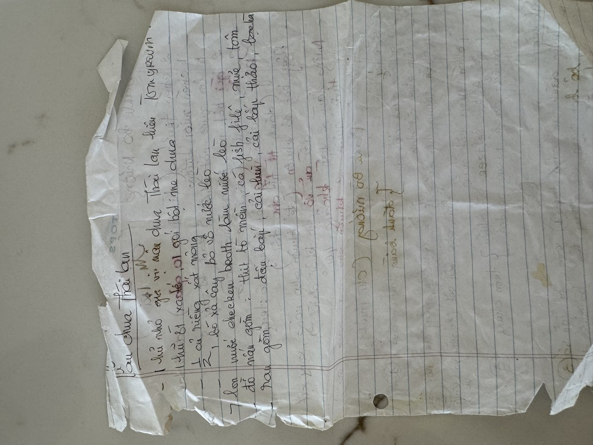

← Back to recipes
Lẩu Chua Thái Bò
Sour Thai-Style Hot Pot with Beef
From Mẹ — Oanh
Nguyên liệu · Ingredients
Nước lẩu · Broth
- 6 cups chicken broth
- 3 tablespoons tamarind paste (me chua), dissolved in ½ cup warm water
- 2 stalks lemongrass (sả), bruised and cut into 3-inch pieces
- 1 tablespoon shrimp paste (mắm ruốc)
- 2 tablespoons fish sauce (nước mắm)
- 1 tablespoon sugar
- 2–3 fresh chili peppers, sliced
Thịt và hải sản · Meat & Seafood
- ½ lb beef (sirloin or eye round), thinly sliced
- ½ lb shrimp, peeled and deveined
- ½ lb fish fillet (swai or catfish), cut into pieces
Rau · Vegetables
- 1 cup okra (đậu bắp), halved
- 2 cups bean sprouts (giá)
- 1 bunch water spinach (rau muống) or morning glory
- 1 bunch rice paddy herb (ngò om)
- Fresh herbs — Thai basil, sawtooth herb (ngò gai)
- Rice vermicelli (bún), cooked, for serving
Cách làm · Instructions
- Prepare the tamarind water: soak tamarind paste in warm water, mash and strain out the seeds. This sour base is the soul of the broth — Mẹ always tasted it and adjusted until the sourness was just right.
- Bring chicken broth to a boil in a hot pot or large pot. Add lemongrass, shrimp paste, fish sauce, sugar, and the tamarind water. Let it simmer for 10 minutes so the flavors marry together.
- Taste the broth — it should be tangy, savory, and slightly sweet. Adjust with more tamarind for sour, fish sauce for salt, or sugar to balance.
- Set up the table with the hot pot in the center, surrounded by platters of sliced beef, shrimp, fish, and all the vegetables. This is a communal meal — everyone cooks together at the table.
- Cook the heartier vegetables first — okra takes a few minutes. Then dip the beef, shrimp, and fish into the simmering broth just until cooked through. The beef only needs 10–15 seconds.
- Add bean sprouts, water spinach, and fresh herbs near the end — they wilt quickly and should stay bright and crisp.
- Serve with bowls of cooked rice vermicelli. Ladle the hot broth and cooked ingredients over the noodles. Mẹ's lẩu nights were always the loudest and happiest — everyone reaching across the table, laughing, and eating together.
Công thức gốc · Original handwritten recipe

❦
A recipe from Mẹ's kitchen